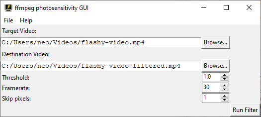

by neomodulo
Written for pre-release version 0.1

To run, have the following installed:
To learn more about ffmpeg is utilized, you can find the documentation for the photosensitivity filter here.
You'll need to point out to the program where on your computer your video is, as well as where you'd like it saved.
To find the video you'd like to filter, find the section labelled "Target Video". Press the "Browse..." button, and a window should appear on your computer of your files. Select your file and press "OK" to continue.
In the text box by the button's side, you will see the path to the selected file on your computer. You can also edit this manually to point to somewhere else.
The same applies for where you'd like to save the video. In the section labelled "Destination Video", click "Browse..." and type in the new name of the filtered video. It's reccomended not to overwrite the old one in case you need to make some adjustments.
There are 3 parameters to keep in mind when using the photosensitivity filter in order to make it work most effectively. They operate as follows:
Threshold: The lower this is, the stricter the video will be filtered. This may come at the cost of video quality. It's reccomended to experiment with your video in particular to see what works best for you. In the future, we will have premade profiles for this. (Cartoon, Live, Video Game, Anime, etc.)
Frames per Second: The frames per second rate in your Target Video file. Also known as fps, or framerate. This one is especially important! Your video's framerate can usually be found with your file manager, or a video player, in an "Information" section, usually.
Skip frames at beginning: not sure how to explain this yet sorry
Once you have everything set, press the Run Filter button at the bottom right, and enjoy the flash-free results...! Hopefully. Things can always go wrong, so let's discuss some...
(TBD)
There's still a few... okay, a lot of things to work out. If anyone knows how to handle these, please let me know.